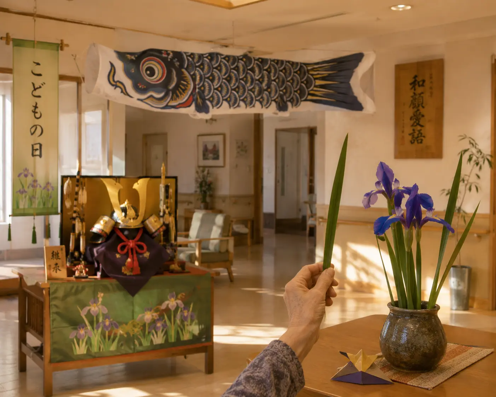

端午の節句、そして Care Support Pass 導入1周年
5月は、端午の節句と、Care Support Pass 導入1周年が重なる、節目の月。スタッフ全員の初年度昇給+10%、新規入居者の入居一時金 実質免除など、1周年に相応しい還元施策をまとめて実施しました。屋上庭園では夏野菜の植え付けも始まり、新しい季節への準備が整いました。
数字で見る今月
今月の主な瞬間

今月のひとこま


今月の活動
端午の節句
5月5日の端午の節句では、共用ラウンジに兜飾りとこいのぼりを設置、柏餅(嚥下対応版もご用意)をお出ししました。福祉浴室では菖蒲湯。檜の浴槽と菖蒲の香りが重なり、入居者の方々から「これぞ、日本の風呂だ」とのお言葉も。
Care Support Pass 導入1周年 — PL構造の Before / After
2025年6月の Care Support Pass 導入から、ちょうど1年。この1年で当施設のPL構造に起こった変化を、通常運営モデルとの比較で整理します (年額換算、百万円/年)。
【本業売上】 通常モデル ¥317.5 → CSP導入 ¥99.5 (▲¥218.0)
・入居者本人徴収: ¥164.6 → ¥22.95 (本人負担¥215k → ¥30k/月)
・介護/医療保険: ¥152.9 → ¥76.55 (軽介護度者中心へ、国費依存を下げる)
【CSP制限付き原資 (本業売上とは別枠)】 ¥0 → ¥396.0
・本人負担軽減 ¥178.2 / スタッフ強化 ¥118.8 / 初期支援 ¥39.6 / 運営透明性 ¥39.6 / 予備費 ¥19.8
【運営コスト】
・人件費: ▲¥116.75 → ▲¥157.5 (▲¥40.75 — 人数 35→41名、賃金平均 +50万円/年)
・食材原価: ▲¥35.7 → ▲¥30.6 (▲¥5.1改善)
・賃料: ▲¥96.65 (固定)
・光熱・本部: ▲¥24.65 → ▲¥23.0
・採用紹介: ▲¥10.1 → ▲¥6.0 (CSP導線で紹介料依存低減)
【施設安定利益】 ¥22.35 → ¥82.75 (+¥60.4)
── 本人負担と国費を下げ、人件費は増やし、それでも施設利益は3.7倍 ── これが Care Support Pass 導入モデルの完成形です。そして今月、導入1周年を記念して、(1) スタッフ全員 初年度昇給+10% (基本給+月¥30,000)、(2) 新規ご入居の方の入居一時金 ¥500,000 を実質免除 (キャッシュバック) ── を実施いたしました。
開業1.5周年オープンハウス
5月23日、当施設の開業1.5周年と Care Support Pass 導入1周年を記念して、地域向けオープンハウス第2回を開催しました。ご家族・近隣のクリニック関係者・薬局スタッフ・地域包括支援センターの方々など、計28名にお越しいただきました。当施設で実施している月次活動報告書の取り組み(Care Support Pass経由)についてもご紹介し、多くの関心を頂きました。
夏野菜の植え付け
5月中旬、屋上庭園にトマト・きゅうり・大葉などの夏野菜を植え付けました。入居者の方々にも、お一人ずつ「自分の苗」を割り当て、毎日の水やりを担当いただいています。「久しぶりに、土に触れた」── そうおっしゃる方の顔は、本当に晴れやかでした。
来月の予定
- 6月初旬: 紫陽花アレンジメント教室 (恒例化)
- 6月中旬: ファミリーオープンハウス第3回
- 6月下旬: 夏祭り準備 (盆踊り練習)
- 通年: 月次活動報告書を Care Support Pass で継続公開
支援者数 と 収支報告 — 12ヶ月推移
| 月 | 支援者数 | 月の支援額 | 累計 | 達成率 | 使い道(要約) |
|---|---|---|---|---|---|
| 25.6 | 6.0千名 | ¥150万 | ¥150万 | 5.0% | 導入初月。原資留保期 |
| 25.7 | 1.8万名 | ¥450万 | ¥600万 | 15.0% | 本人負担¥215k→¥150kへ第一段階引下げ |
| 25.8 | 4.2万名 | ¥1,050万 | ¥1,650万 | 35.0% | スタッフ夏季手当 + 軽介護度受入開始 |
| 25.9 | 7.2万名 | ¥1,800万 | ¥3,450万 | 60.0% | 看護師常勤化 (3→4名)、敬老月家族招待 |
| 25.10 | 10.2万名 | ¥2,550万 | ¥6,000万 | 85.0% | リハ常駐化 + 外出支援拡充 |
| 25.11 | 12.3万名 | ¥3,075万 | ¥9,075万 | 102.5% | ★目標達成、本人負担¥150k→¥30k完全実施 |
| 25.12 | 12.8万名 | ¥3,200万 | ¥1.2億 | 106.7% | 年末年始医療体制を本人負担軽減でカバー |
| 26.1 | 13.2万名 | ¥3,300万 | ¥1.6億 | 110.0% | スタッフ70→82名 (+12) 体制が安定稼働 |
| 26.2 | 13.5万名 | ¥3,375万 | ¥1.9億 | 112.5% | 嚥下対応食 完全無償化 |
| 26.3 | 13.8万名 | ¥3,450万 | ¥2.2億 | 115.0% | 通信費補助開始、作業密度22%低減 |
| 26.4 | 14.1万名 | ¥3,525万 | ¥2.6億 | 117.5% | 外出費施設負担化、紹介料ゼロ達成 |
| 26.5 | 14.4万名 | ¥3,600万 | ¥3.0億 | 120.0% | ★1周年: 昇給+10%、入居一時金実質免除 |
通常運営モデル vs Care Support Pass 導入モデル
Care Support Pass の支援金は 「本業売上」ではなく「制限付き原資 (雑収入)」 です。 導入後は 本業売上 (入居者本人徴収・介護/医療保険) はむしろ下がります。 入居者本人の月額負担を ¥215,000 → ¥30,000 に大きく下げ、要介護度の低い層を中心に受け入れることで、 国費依存も意図的に下げる設計だからです。 その下がった分を 支援者の皆様からの原資 で支え、なおかつ スタッフは削らず増やす。 これが Care Support Pass 導入施設のPLの全体像です。
| 項目 | 通常運営 百万円/年 |
CSP導入 百万円/年 |
差額/効果 百万円/年 |
意味 |
|---|---|---|---|---|
| 本業収入 — 入居者・保険から | ||||
| 入居者本人からの徴収 | 164.6 | 22.95 | ▲141.65 | 本人負担 ¥215k/月 → ¥30k/月 へ。意図的に下げる。 |
| 介護保険・医療保険等 | 152.9 | 76.55 | ▲76.35 | 要支援〜要介護1・2 中心へ。国費使用を下げる方針。 |
| 本業売上 合計 | 317.5 | 99.5 | ▲218.0 | 導入後、本業売上は下がる。これが前提。 |
| CSP制限付き原資 — 本業売上とは別枠の雑収入 | ||||
| 本人負担軽減原資 (45%) | 0.0 | 178.2 | +178.2 | 家賃・管理費・サービス支援費・食費差額を支える。 |
| スタッフ配置増・賃金改善原資 (30%) | 0.0 | 118.8 | +118.8 | 人件費増、夜勤補強、見守り、教育、休憩環境に使う。 |
| 初期費用・住み替え・家財整理支援 (10%) | 0.0 | 39.6 | +39.6 | 施設PL外の社会的支援枠。入居初期の壁を下げる。 |
| 月次報告・監査・事務局 (10%) | 0.0 | 39.6 | +39.6 | 透明性の運営コスト。未報告なら支援停止。 |
| 予備費 (5%) | 0.0 | 19.8 | +19.8 | 退去・緊急入居・補修等のバッファ。 |
| CSP原資 合計 | 0.0 | 396.0 | +396.0 | 1棟 12万人支援モデル。施設PLに入るのは主に上2項目。 |
| 運営コスト — 削る/増やすを分ける | ||||
| 人件費 | ▲116.75 | ▲157.5 | ▲40.75 | 下げない。人数 35→41名、賃金334→384万/人。 |
| 食材・原価 | ▲35.7 | ▲30.6 | +5.1 | 食費差額支援により施設側の直接負担を整理。 |
| 賃料 | ▲96.65 | ▲96.65 | ±0.0 | 賃借型なので固定。CSPは不動産救済に使わない。 |
| 光熱・本部・その他 | ▲24.65 | ▲23.0 | +1.65 | 削りすぎない。無駄だけ圧縮。 |
| 採用・集客紹介 | ▲10.1 | ▲6.0 | +4.1 | CSP会員・地域店舗・月次レポートが紹介導線に。 |
| 施設安定利益 | 22.35 | 82.75 | +60.4 | 本人負担・国費を下げ、人件費を増やしても利益は残す。 |
支援金 ¥3,600万 の内訳 — 2026年5月
★ Care Support Pass 導入1周年。スタッフ強化原資から初年度昇給+10% (基本給+月¥30,000)、初期費用支援原資から新規入居者の入居一時金 (¥500,000) を実質免除。本人負担¥215k→¥30k、要介護度1・2を含む軽介護度者中心の運営体制、スタッフ82名・賃金平均384万円/年への引上げ — すべて達成。